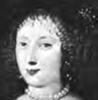
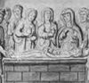
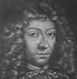

Alison Booth
Ragg, Laura M. Women Artists of Bologna. London: Methuen, 1907.
TOC: Caterina dei Vigri, the Nun; Properzia de' Rossi, the Sculptor; Lavinia Fontana, the Portrait Painter; Elisabetta Sirani, the Disciple of Guido Reni.
-
 Madonna and Child
Madonna and Child -
Madonna Del Pomo
-
 St. Ursula and her Maidens
St. Ursula and her Maidens -
Lavinia Fontana
-
The Gozzadini Family
-
 Francis of France
Francis of France -
 Elisabetta Sirani
Elisabetta Sirani
Search OCLC WorldCat for this title.
Search Google Books for this title.
Rait, Robert S., ed. Five Stuart Princesses. London: Constable; New York: Dutton, 1902; 1908. London: Westminster, 1922.
TOC: Princess Mary; Henriette-Anne; Sophie; Margaret of Scotland; Queen Elizabeth.
Chapter titles: Mary, Princess Royal of England, 1631-1660; Henriette-Anne, Duchesse d'Orléans; Sophie, Consort of Ernest Augustus, Elector of Hanover; Margaret of Scotland, Consort of Louis XI, King of France; Queen Elizabeth, Consort of Frederick I, King of Bohemia.
-
Henrietta
-
Tomb of the Princess Margaret
-
 Elizabeth
Elizabeth -
Charles Louis
-
 Mary of Orange
Mary of Orange -
 Henriettain Childhood
Henriettain Childhood -
 Sophia
Sophia -
 The Princess Elizabeth
The Princess Elizabeth
Search OCLC WorldCat for this title.
Search Google Books for this title.
Ranelagh, Frank [i.e. Robert Folkestone Williams]. Maids of Honour: A Tale of the Court of George I. 3 vols., London: Colburn, 1845; Kent, 1861.
Historical fiction?
Search OCLC WorldCat for this title.
Search Google Books for this title.
Rappoport, Angelo Solomon. The Fair Ladies of the Winter Palace. London: Holden & Hardingham, 1914.
Search OCLC WorldCat for this title.
Search Google Books for this title.
Ravenel, Florence Leftwich. Women and the French Tradition. New York: Macmillan, 1918.
TOC: Arvède Barine; George Sand; Mme de Staël; Madame de Sévigné; Mme de Lafayette.
Chapter titles: The Eternal Feminine; A Woman Critic of Women: Arvède Barine; A Law Unto Herself: George Sand; The Great Salonière: Mme de Staël; The Great Tradition: Madame de Sévigné; The Riddle of the Sphinx: Mme de Lafayette; Great Women's Daughters; Women of France.
“Reprinted in part from various periodicals.”
Search OCLC WorldCat for this title.
Search Google Books for this title.
Raymond, Ida. [i.e., Mrs. Mary T. Tardy]. Southland Writers: Biographical and Critical Sketches of the Living Female Writers of the South. With Extracts from Their Writings. Philadelphia: Claxton, Remsen & Haffelfinger, 1870. As: The Living Female Writers of the South. 1872. As The Living Female Writers of the South. [same puBritish Library.], 1872.
TOC: Kentucky: Mrs. Catharine Ann Warfield; Eliza Ann Dupuy; Rosa Vertner Jeffrey; Agnes Leonard; Sallie M. Bryan; Mrs. Jane T. H. Cross; Miss Nelly Marshall; Florence Anderson; Mrs. Chapman Coleman and Daughters; S. Rochester Ford; Miss Allie Torbett; Mrs. Marie T. Daviess. Louisiana: Sarah A. Dorsey; Mrs. Marie Bushnell Williams; Anna Peyre Dinnies; Julia Pleasants Creswell; M. Sophie Homes; Eliza Lofton Pugh; Mrs. Eliza Elliott Harper; Mary Walsingham Crean; Mrs. Josephine R. Hoskins; Susan Blanchard Elder; Mrs. M. B. Hay; Gertrude A. Canfield; Ellen A. Moriarty; Mrs. E. M. Keplinger; Mrs. Louise Clack; Mrs. Gideon Townsend. Georgia: Mrs. Mary E. Tucker; Miss Margie P. Swain; Kate A. Du Bose; Loula Kendall Rogers; Emma Moffett Wynne; Mrs. Mary C. Bigby; Annie R. Blount; Maria Jourdan Westmoreland; Miss Maria Lou Eve; Miss Kate C. Wakeler; Carrie B. Sinclair; Mrs. Bettie M. Zimmerman; Mrs. Sallie M. Martin; Clara Le Clerc; Mrs. Bessie W. Williams; Louise Manheim; Mrs. Rebecca Jacobus; Mrs. Mary A. McCrimmon; Mrs. Agnes Jean Stibbes; Miss Fanny Andrews; Alabama: Mrs. Adelaide de Vendel Chaudron; Miss Kate Cumming; Laura S. Webb; Mrs. Annie Creight Lloyd; Mrs. E. W. Bellamy; Miss Mary A. Cruse; Lilian Rozell Messenger; Sarah E. Peck; Julia L. Keyes; Augusta J. Evans; I.M. Porter Henry; Catherine W. Towles; Mrs. Julia Shelton; Mississippi: Sallie Ada Vance; Mrs. Mary Stanford; Mrs. S.B. Cox; Eliza Poitevent; Florida: Mary E. Bryan; Fanny E. Herron; Augusta de Milly; Mrs. M. Louise Crossley; Tennessee: Mrs. L. Virginia French; Mrs. Annie Chamber Kethcum; Mrs. Clara Colres; Adelia C. Graves; Mrs. Mary E. Pope; Virginia: Mrs. Margaret J. Preston; Mrs. S.A. Weiss; Mrs. Constance Cary Harrison; M. J. Haw; Mrs. Mary Wiley; Miss Virginia E. Davidson; Miss Sallie A. Brock; Miss Sue. C. Hooper; Matilda S. Edwards; Mary J.S. Upshur; Martha Haines Butt Bennett; Miss Sarah J.C. Whittlesey; Helen G. Beale; Mrs. Cornelia J.M. Jordan; Laura R. Fewell; Mrs. Lizzie Petit Cutler; North Carolina: Mary Bayard Clarke; Mary Mason; Cornelia Phillips Spencer; Fanny Murdaugh Downing; Mrs. Mary Ayer Miller; Mrs. Susan J. Hancock; South Carolina: Sue Petigru King; Mrs. Caroline H. Jervey; Caroline A. Ball; Mrs. Mary S.B. Shindler; Miss Essie B. Cheesborough; Mary Scrimzeour Whitaker; Margaret Maxwell Martin; Mrs. Catharine Ladd; Clara V. Dargan; Annie M. Barnwell; Mary Caroline Griswold; Miss Julia C. Mintzing; Maryland: Anne Moncure Crane; Lydia Crane; Georgie A. Hulse McLeod; Texas: Mrs. Fannie A. D. Darden; Mrs. Maud J. Young; Miss Mollie E. Moore.
Search OCLC WorldCat for this title.
Search Google Books for this title.
Read, Thomas Buchanan, ed. The Female Poets of America. Philadelphia: Butler, 1848; 1849; 1850; 1851; 1852; 1855; 1857; 1864; 1866; 1867. New York: Worthington, 1887; 1890; Hagermann, 1894.
TOC: Sarah Hall; Maria Brooks; Elizabeth Oakes Smith; Hannah F. Gould; Lydia H. Sigourney; Louisa Jane Hall; Lydia Jane Pierson; Frances Sargent Osgood; Emma O. Embury; Caroline Gilman; S. Anna Lewis; Elizabeth Bogart; Luella J. B. Case; Elizabeth S. Swift; Elizabeth F. Ellet; Mary E. Lee; Sarah O Mayo; Mary E. Hewitt; Lucy Hooper; Mrs. Emily Judson; Louisa Simes; Sarah J. Hale; Mary A. H. Dodd; Julia H. Scott; Louisa S. M’Cord; Juliet H. L. Campbell; Mary S. B. Dana; Amelia B. Welby; Mrs. R. S. Nichols; The Misses Ware; Caroline M. Sawyer; Catharine H. Esling; Anne C. Lynch; Laura M. Thurston; Sarah Helena Whitman; Elizabeth Margaret Chandler; Edith May; Eliza Townshend; Elizabeth C. Kinney; Alice Carey; Phoebe Carey; Sarah L. P. Smith; Mary E. Brooks; Margaret Junkin; Anna Peyre Dinnies; Elizabeth J. Eames; Sarah J. Clarke; Mrs. J. C. Neal; Hannah Jane Woodman; Harriet Winslow List; Eliza L. Follen; Maria Lowell; Mrs. Gray; Julia Howe; Anne M. F. Annan; Marion Ward; Susan Pindar; Eliza L. Sproat; A. D. Woodbridge; Mrs. Margaret M. Davidson; Lucretia Maria Davidson; Margaret Miller Davidson; Anna Maria Wells; Helen Irving; Mary L. Lawson; Mrs. M. St. Leon Loud; Cornelia da Ponte; Anna Cora Mowatt Ritchie; Charlotte Cushman; Charlotte M. S. Barnes; Catharine E. Beecher; Martha Day; Ellen S. Smith; Marion H. Rand; Clara Moore; Mary G. Wells; Elizabeth Lloyd; Blanchee Bennairde; Mary J. Reed; Caroline Howard; Mrs. C. W. Du Bose; Essie B. Cheesborough.
Search OCLC WorldCat for this title.
Search Google Books for this title.
Reed, Myrtle [1874-1911]. Love Affairs of Literary Men. New York: Putnam's, 1907.
TOC: Jonathan Swift; Alexander Pope; Samuel Johnson; Lawrence Sterne; William Cowper; Thomas Carlyle; Edgar Allan Poe; Percy Bysshe Shelley; John Keats.
NOT:=male-female collective biography. Reed was a prolific author of fiction, women's self-help, cookbooks, many for Putnam's, some under the pseudonym Olive Green.
Search OCLC WorldCat for this title.
Search Google Books for this title.
Reed, Myrtle [1874-1911]. Happy Women. New York: Putnam's, 1913.
TOC: Dolly Madison; Dorothy Wordsworth; Queen Louise; Caroline Herschel; Elizabeth Browning; Charlotte Cushman; Lucretia Mott; Florence Nightingale; Sister Dora; Jenny Lind; Louisa May Alcott; Queen Victoria.


Search OCLC WorldCat for this title.
Search Google Books for this title.
Reed, Ruth. The Negro Women of Gainesville, Georgia. The Negro Women of Gainesville Athens: University of Georgia Press, 1921.
M.A. thesis, U. Georgia, 1921.
Search OCLC WorldCat for this title.
Search Google Books for this title.
Reeves, Winona Evans. The Blue Book of Iowa Women: A History of Contemporary Women. [Mexico, MO: Press of the Missouri], 1914.
Search OCLC WorldCat for this title.
Search Google Books for this title.
Remarkable Women of Different Nations and Ages. 1st ser. Boston and Cleveland: Jewett, 1858.
TOC: Beatrice Cenci; Charlotte Corday; Joanna Southcott; Jemimah Wilkinson; Madame Ursinus; Madame Gottfried; Mdlle Clairon; Harriet Mellon; Mdlle Lenormand; Angelica Kauffmann; Mary Baker; Pope Joan; Joan of Arc.
Search OCLC WorldCat for this title.
Search Google Books for this title.
Reynolds, Myra. The Learned Lady in England, 1650-1760. Boston and New York: Houghton Mifflin, 1920.
Chapter titles: Learned Ladies in England Before 1650; Learned Ladies in England from 1650 to 1760; Education; Miscellaneous Books on Women in Social and Intellectual Life; Satiric Representations of the Learned Lady in Comedy.
Search OCLC WorldCat for this title.
Search Google Books for this title.
Rhodes, Nora M. Life Stories of Some Women Missionaries. Elgin, IL: General Mission Board, Church of the Brethren, [1937?].
TOC: Ida Cora Shumaker; Minerva Metzge; Winifred Estelle Cripe; Faye Moyer; E. Mary Royer.
Search OCLC WorldCat for this title.
Search Google Books for this title.
Richards, Samuel Alfred. Feminist Writers of the Seventeenth Century. London: Nutt, 1914.
M. A. thesis, U. London.
Search OCLC WorldCat for this title.
Search Google Books for this title.
Richardson, Jerusha D[avidson Hunting] [Mrs. Aubrey Richardson]. Famous Ladies of the English Court. London: Hutchinson; Chicago: Stone, 1899.
TOC: Elizabeth; The Lady Mary Sidney; Mary; Penelope; The Lady Anne Clifford; Lucy Countess of Carlisle; Frances, Duchess of Richmond; Anne, Countess of Sunderland; Sarah, Duchess of Marlborough; Henrietta, Countess of Suffolk; The Lady Sarah Lennox; Isabella, Marchioness of Hertford.
Chapter titles: Elizabeth, Countess of Shrewsbury, “Bess of Hardwick”; The Lady Mary Sidney; Mary, Countess of Pembroke; Penelope, Lady Rich, “Countess of Essex and of Devonshire”; The Lady Anne Clifford, Countess of Pembroke, Dorset, and Montgomery; Lucy Countess of Carlisle; Frances, Duchess of Richmond; Anne, Countess of Sunderland; Sarah, Duchess of Marlborough; Henrietta, Countess of Suffolk; The Lady Sarah Lennox; Isabella, Marchioness of Hertford.
Search OCLC WorldCat for this title.
Search Google Books for this title.
Richardson, Jerusha D[avidson Hunting] [Mrs. Aubrey Richardson]. Women of the Church of England. London: Chapman & Hall, 1907; New ed, 1908.
Search OCLC WorldCat for this title.
Search Google Books for this title.
Richmond, Euphemia Johnson Guernsey. Woman, First and Last: And What She Has Done. 2 vols. New York: Phillips & Hunt; Cincinnati, OH: Cranston & Stowe, 1887; 1891.
TOC: vol. I: Eve; Wives of the Patriarchs; Miriam; Deborah; Ruth; Hannah; Jezebel; Athaliah; Esther; Panthea, Queen of the Susians; Cleopatra; Salome; Chelonis; Mary, Mother of Jesus; Salome, the Daughter of Herodias [second Salome]; Joan of Arc; Catharine Adorna; Queen Isabella; Catherine de Medici; Catharine von Bora; Olympia Morata; Catharine Parr; Lady Jane Grey; Queen Mary of England; Queen Elizabeth of England; Queen Mary of Scotland; Lady Fanshawe; Mrs. Lucy Hutchinson. vol II: Lady Arabella Johnson; Mme Guyon; Christina, Queen of Sweden; Susannah Wesley; Pocahontas; Queen Anne; Selina, Countess of Huntingdon; Mary Washington; Maria Theresa; Catherine of Russia; Mrs. Howard; Martha Washington; Barbara Heck; Mary Fletcher; Hannah More; Mme Roland; Marie Antoinette; Charlotte Corday; Mme Lafayette; Josephine; Mrs. General Jackson; Mme Lavalette; Mrs. Thomas Jefferson; Mrs. Madison; Grace Webster; Elizabeth Fry; Mrs. Ann H. Judson; Lydia Huntley Sigourney; Mary Lyon; Mary Somerville; Mrs. Phebe Palmer; Victoria; Florence Nightingale; Charlotte Bronte; Agnes E. Jones; Harriet Beecher Stowe; Harriet Hosmer.
Making “no claim to originality,” the volumes testify to “the power of woman for good or evil,” and to the fact that “intellect has no sex” (3).
Search OCLC WorldCat for this title.
Search Google Books for this title.
Ritchie, Anne Isabella [Thackeray]. A Book of Sibyls. London: Smith Elder; New York: Harper; Leipzig: Tauchnitz, 1883.
Bodleian Lives of Barbauld, Edgeworth, Opie, and Austen reprinted from The Cornhill . Ritchie also authored, among other works, Records of Tennyson, Ruskin, and Browning (1892), the essay collection Toilers and Spinsters (London: Smith Elder, 1874) [by Miss Thackeray, with an endpage advert. for the works of Thackeray], with an essay on work for “redundant women,” and “A Discourse on Modern Sibyls,” the presidential address to the English Association, English Association Pamphlets 24 (Feb. 1913): 1-9, consisting of autobiographical reflections on Gaskell, Oliphant, the Brontës, George Eliot. Ritchie says the title Book of Sibyls was borrowed from an Elizabethan “collection of histories” (2).
Search OCLC WorldCat for this title.
Search Google Books for this title.
Robbins, Alice Emily. A Book of Duchesses: Studies in Personality. London: Melrose, 1913.
Search OCLC WorldCat for this title.
Search Google Books for this title.
Robbins, Mary La Fayette. Alabama Women in Literature. [Selma, AL: Selma Printing], 1895.
Search OCLC WorldCat for this title.
Search Google Books for this title.
Roberts, Margaret. Women of the Last Days of Old France. London: F. Warne; New York: Scribner, Welford & Armstrong, 1872.
Topical chapters of history with biographies. Also author of Saint Catherine of Siena and Her Times (1906).
Search OCLC WorldCat for this title.
Search Google Books for this title.
Robertson, Mrs. Clyde. Fifty Famous Women. Illustrated. Atlanta: Emory University Press, 1936.
See title 293, circa 1850-1879.
Search OCLC WorldCat for this title.
Search Google Books for this title.
Robertson, Eric S. English Poetesses: A Series of Critical Biographies, with Illustrative Extracts. London, Paris, and New York: Cassell, 1883; 1900.
TOC: Katherine Philips; Aphra Behn; The Duchess of Newcastle; Early Minor Writers; Lady Mary Montagu; Mrs. Piozzi; Hannah Cowley; Charlotte Smith; Mrs. Barbauld; Anna Seward; Mrs. Opie; Mary Lamb; Scottish Poetesses; Lady Grisell Baillie; Mrs. Cockburn; Jane Elliot; Lady Anne Barnard; The Baroness Nairne; Joanna Baillie; Mrs. Hemans; L.E.L; Adelaide Proctor; Caroline Norton; Lady Dufferin; Mrs. Southey; Mary Mitford; Sarah Flower Adams; Sara Coleridge; Mrs. Elizabeth Barrett Browning; Emily Bronte; George Eliot; Menella Bute Smedley; Christina Rossetti; Emily Pfeiffer; Augusta Webster; Alice Meynell; Jean Ingelow; Harriet Hamilton King; Mathilde Blind; Mary Robinson.
Search OCLC WorldCat for this title.
Search Google Books for this title.
Robins, Edward. Twelve Great Actresses. New York and London: Putnam, 1900.
TOC: Anne Bracegirdle; Anne Oldfield; Margaret Wofflington; Frances Abington; Sarah Siddons; Dora Jordan; "Perdita" Robinson; Frances Ann Kemble; Rache; Charlotte Cushman; Adelaide Neilson; Ristori.
Search OCLC WorldCat for this title.
Search Google Books for this title.
Rockwell, Donald Shumway, and G. Maillard Kesslere. Women of Achievement: Biographies and Portraits of Outstanding American Women. New York: House of Field, 1940.
Search OCLC WorldCat for this title.
Search Google Books for this title.
Rogers, Cameron. Gallant Ladies. Illustrated by Charles O. Naef. New York: Harcourt Brace, 1928.
TOC: Mata Hari; Mary Read and Anne Bonny; The Irresistible Montez; Belle Starr; Her Frolic Grace of Kingston; La Maupin; The Last Valois; Study of an Actress [Adrienne Lecouvreur]; The Queen of Cabals [Marie de Rohan]; Calamity Jane.
Search OCLC WorldCat for this title.
Search Google Books for this title.
The Roll of Honour for Women: An Annual Biographical Record of Women of the World Who Have Worked for the Public Good. London: “Gentlewoman” Offices, 1906.
Search OCLC WorldCat for this title.
Search Google Books for this title.
Rolt-Wheeler, Ethel. Famous Blue-Stockings. With Sixteen Illustrations. London: Methuen; New York: Lane, 1910; 1911.
TOC: Mrs. Montagu; Mrs. Delany; Mrs. Thrale (Piozzi); Mrs. Vesey; Mrs. Chapone (Hestor Mulso); Fanny Burney (Madame d'Arblay); Elizabeth Carter; Hannah More.
Novelist and poet. Some generic chapters.
Search OCLC WorldCat for this title.
Search Google Books for this title.
Rolt-Wheeler, Ethel. Women of the Cell and Cloister. London: Methuen; Milwaukee: Young Churchman, 1913.
TOC: St. Mary of Egypt; St. Brigid of Ireland; Héloïse; St. Clare; Dame Juliana of Norwich; St. Catherine of Siena; St.Teresa; The Mère Angélique.
Search OCLC WorldCat for this title.
Search Google Books for this title.
Romieu, E., and G. Romieu. Three Virgins of Haworth: An Account of the Brontë Sisters. Translated by R. Tapley. London: Skeffington; New York: Dutton, 1930.
Search OCLC WorldCat for this title.
Search Google Books for this title.
Ross, Ishbel. Ladies of the Press: The Story of Women in Journalism by an Insider. New York: Harper, 1936.
Ross published separate biographies of President's wives, Mrs. Potter Palmer, Lola Montez, Clara Barton, Rose O'Neal Greenhow the Confederate spy, and others.
Search OCLC WorldCat for this title.
Search Google Books for this title.
Ross, Janet. Three Generations of English Women: Memoirs and Correspondence of Mrs. John Taylor, Mrs. Sarah Austin and Lady Duff Gordon. 2 vols., London: Murray, 1888. Rev. ed. 1 vol., London: Unwin, 1892; 1893.
TOC: Susannah Taylor; Sarah Austin; Lady Duff Gordon.
Search OCLC WorldCat for this title.
Search Google Books for this title.
Rowton, Frederic. The Female Poets of Great Britain, Chronologically Arranged: With Copious Selections and Critical Remarks. London: Longman, Brown, Green, and Longmans, 1848. Philadelphia: Carey & Hart, 1849; Baird, 1853; 1854; 1856. Philadelphia: n.p., 1859. As: Cyclopedia of Female Poets, 1874; Dayton, OH: Alvin Peabody, 1883.
TOC: Lady Juliana Berners; Queen Anne Boleyne; Mrs. Anne Askewe; Queen Elizabeth; Mary, Countess of Pembroke; Miss Elizabeth Melville; Lady Elizabeth Carew; Lady Mary Wroth; Anne, Countess of Arundel; Mrs. Diana Primrose; Mrs. Mary Page; Miss Anna Hume; Mrs. Anne Bradstreet; Miss Ann Collins; Miss Mary Morpeth; Mrs. Katharine Philips; Princess Elizabeth; Mrs. Frances Boothby; Margaret, Duchess of Newcastle; Miss Anne Killigrew; Anne, Marchioness of Wharton; Mrs. Taylor; Mrs. Aphra Behn; Lady Mary Chudleigh; The Honorable Mary Monl; Anne, Countess of Winchelsea; Miss Esther Vanhomrigh; Mrs. Susanna Centlivre; Mrs. Catherine Cockburn; Mrs. Elizabeth Thomas; Mrs. Mary Barber; Mrs. Elizabeth Rowe; Mrs. Jane Brereton; Miss Mary Chandler; Miss Eliza Heywood; Miss Elizabeth Tollet; Mrs. Latetitia Pilkington; Mrs. Mary Leapor; Henrietta, Lady Lexborough; Mrs. Pennington; Miss Mary Masters; Mrs. Madan; Lady Anne Irwin; Lady Mary Wortley Montagu; Mrs. Frances Sheridan; Miss Mary Jones; Mrs. Anne Steele; Mrs. Frances Brooke; Mrs. Greville; Miss Constantia Grierson; Mrs. Henrietta O’Neil; Mrs. Mary Robinson; Mrs. Hester Chapone; Georginia; Miss Elizabeth Carter; Mrs. Ann Yearsley; Miss Caroline Symonds; Mrs. Charlotte Smith; Miss Ann Seward; Miss Scott; Mrs. Mary Tighe; Misses Maria and Harriet Falconar; Miss Elizabeth Trefusis; Miss Alicia Cockburn; Mrs. Hannah Cowley; Isabella Countess of Carlisle; Mrs. Leicester; Mrs. Hannah More; Miss Helen Maria Williams; Mrs. Eleanor Anne Franklin; Miss Susanna Blamire; Mrs. Mary Brunton; Anna Laetitia Barbauld; Mrs. Lady Anne Barnard; Mrs. Anne Grant; Mrs. Anne Hunter; Mrs. Hester Linch Piozzi; Mrs. Ann Radcliffe; Mrs. Henry Rolls; Lady Burrell; Miss Lucy Aikin; Mrs. Amelia Opie; Miss Joanna Baillie; Mrs. Margaret Hodson; Miss Mary Russell Mitford; Mrs. Mary Howitt; Mrs. Caroline Southey; Mrs. Felicia Hemans; Mrs. Tonna; The Honourable Mrs. Norton; Mrs. Laetitia Elizabeth MaClean; Mrs. Abdy; Mrs. Ellis (Sarah Stickney); Miss Jewsbury; Lady Flora Hastings; Mary Anne Browne; Mrs. Sara Coleridge; Miss Eliza Cook; Mrs. Frances Anne Butler; Mrs. Elizabeth Barrett Browning; Miss Lowe; Miss Charlotte Young.
Search OCLC WorldCat for this title.
Search Google Books for this title.
Russell, Lady Constance Charlotte Elisa Lennox. Three Generations of Fascinating Women and Other Sketches from Family History. London: Longmans, Green, 1904. 2d ed., 1905.
TOC: Three Generations of Fascinating Women; A Gipsy Prediction Fulfilled; More About the Gunnings; The Maid of the Oaks; A Canny Scot; A Bygone Beauty; 'N or M'; Strange Vicissitudes of a Highland Lady of Quality in the Eighteenth Century; An Empress of Fashion; A Duke 'Born in a Barn, and Died in a Barn'; Thomas Scot, The Regicide; The Two Lords Whitworth; Gunning Pedigree.
The Gunning family.
Search OCLC WorldCat for this title.
Search Google Books for this title.
Russell, Rev. Matthew, The Three Sisters of Lord Russell of Killowen and Their Convent Life. London and New York: Longman, 1912.
TOC: Mother Mary Baptist; Mother Mary Emmanuel; Sister Mary Aquin.
Search OCLC WorldCat for this title.
Search Google Books for this title.
Russell, William. Eccentric Personages: Memoirs of the Lives and Actions of Remarkable Characters, Beau Brummell, Beau Nash, Daniel DeFoe, Dean Swift, Captain Morris, J. M. W. Turner, Chevalier D'Eon, etc. London and New York: Avery; London: Maxwell, 1864; 1865. New York: American News, 1866; 1888.
NOT:=male-female collective biography. Oldfield. Includes women.
TOC: Margaret Fuller; Lady Hester Stanhope; Lady Mary Wortley Montague; Christina of Sweden; Madame la Comtesse de Genlis; The Lady-witch.
Search OCLC WorldCat for this title.
Search Google Books for this title.
Russell, William. Extraordinary Women: Their Girlhood and Early Life. London: Routledge, 1857. New ed. London and New York: Routledge, Warne & Routledge, 1860; 1864.
See How To Make It as a Woman, 69.
TOC: The Maid of Orleans; Mrs. Fry; The Empress Josephine; Madame Roland; Christina, Queen of Sweden; Elizabeth Woodville; Mrs. Hutchinson; Queen Elizabeth; Madame de Sévigné; Isabella of Castile; Anne Boleyn; Lady Jane Grey; Mary Queen of Scots; Lady Mary Wortley Montague; Marie-Antoinette [sic]; Mrs. Siddons; Madame de Staël-Holstein; Charlotte Corday; Madame Récamier; Margaret Fuller; Lady Hester Standhope; Madame de Genlis; Catherine II, Empress of Russia; Mrs. Opie; Maria-Theresa.
Not to be associated with Compton MacKenzie's novel about lesbians, Extraordinary Women (1928).
Search OCLC WorldCat for this title.
Search Google Books for this title.
Ryburn, Jessie D., Ellen S. Bowen, and Mrs. J. W. Walker. Women of Old Abingdon. Women of Old Abingdon [Pulaski, VA: B.D. Smith & Bros.], 1937.
Women in Presbyterian church work.
Search OCLC WorldCat for this title.
Search Google Books for this title.
Ryley, M. Beresford. Queens of the Renaissance. With Twenty-Four Illustrations. London: Methuen; Boston: Small, 1907; 1908.
TOC: Catherine of Siena; Beatrice d'Este; Anne of Brittany; Lucrezia Borgia; Margaret d'Angoulême; Renée, Duchess of Ferrara.
British Library.
Search OCLC WorldCat for this title.
Search Google Books for this title.